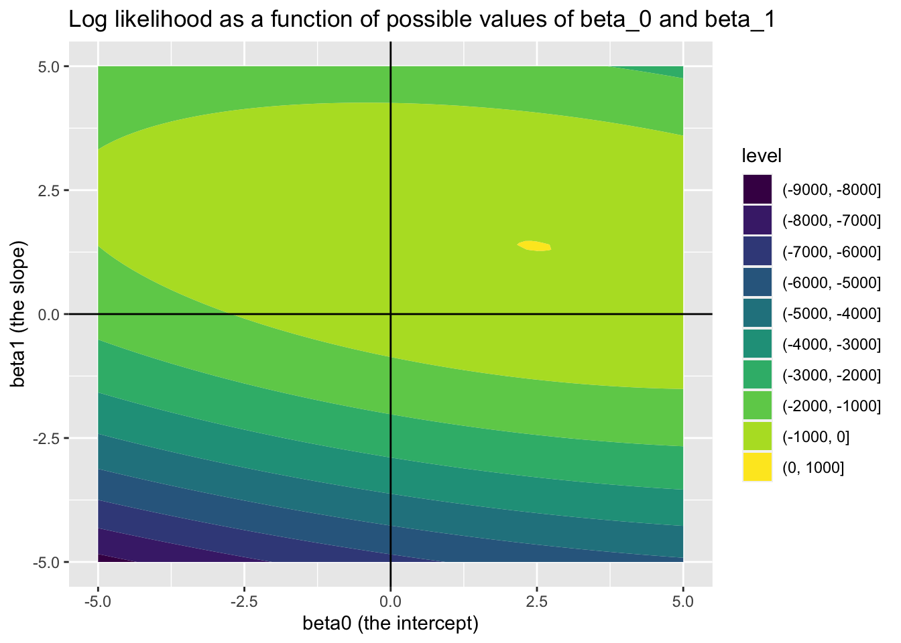

Code
llNormal <- function(pars, y, X){
beta <- pars[1:ncol(X)]
sigma2 <- exp(pars[ncol(X)+1])
-1/2 * (sum(log(sigma2) + (y - (X%*%beta))^2 / sigma2))
}Jon Minton
January 2, 2024
In the first part of this series, I stated that statistical model fitting, within the generalised model framework presented in King, Tomz, and Wittenberg (2000), involves adjusting candidate values for elements of \(\beta = \{\beta_0, \beta_1, ..., \beta_K \}\) such that the difference between what the model predicts given some predictor values, \(Y_i | X_i\), and what has been observed alongside the predictors, \(y_i\), is minimised on average1 in some way.
The aim of this post is to show how this process is typically implemented in GLMs, using likelihood theory.
Statisticians and more advanced users of statistical models often divide themselves into ‘frequentists’ and ‘Bayesians’. To some extent the distinction is really between ‘improper Bayesians’ and ‘proper Bayesians’, however, as Bayes’ Rule is at the root of both approaches. Bayes’ Rule is:
\[ P(A|B) = \frac{P(B|A)P(A)}{P(B)} \]
Note in the above the left hand side of the equation is \(P(A|B)\) and the right hand side of the equation includes \(P(B|A)\). To write it out as awkward prose, therefore, Bayes’ Rule is a way of expressing that given this in terms of this given that.
As with much of algebra, \(A\) and \(B\) are just placeholders. We could instead use different symbols instead, such as:
\[ P(\tilde{\theta} | y) = \frac{P(y | \tilde{\theta})P(\tilde{\theta})}{P(y)} \]
Likelihood theory offers a way of thinking about how good a model is in terms of its relationship to the data. According to King (1998) (p. 59), it can be expressed as:
\[ L(\tilde{\theta}| y) = k(y) P(y | \tilde{\theta}) \]
Or
\[ L(\tilde{\theta} | y) \propto P(y | \tilde{\theta}) \]
Where \(\tilde{\theta}\) is a proposed parameter or parameter combination for the model, and \(y\) is the observed outcome.2
The important thing to note is that both Bayes’ Rule and Likelihood Theory are ways of expressing this given that as a function of that given this. Specifically, the model given the data, as a function of the data given the model. 3
When, many years ago, I completed the course from this modelling framework is most associated, a hazing ritual employed near the start of the course was to require participants to derive the likelihood of different model specifications. However, I don’t feel like hazing myself right now, so instead we can use the derivation shown on slide 8 of these slides:
\[ L(\beta, \sigma^2 | y) = \prod{L(y_i | \mu_i, \sigma^2)} \]
Where \(\mu = X \beta\), \(i\) indicates an observation in the data (a row of \(X\) when \(X\) is in matrix form), and \(\prod\) indicates the likelihoods from each observation should be multiplied with each other to derive the overall likelihood for all observed data.
In practice the log Likelihood, rather than the likelihood itself, is used, because this allows calculation of a sum of terms (\(\sum\)) rather than product of terms (\(\prod\)), and the latter tends to be computationally easier to calculate.
As we are interested only in how likelihood varies as a function of those model parameters we wish to estimate, \(\theta = \{\beta, \sigma^2\}\), some of the terms in the log likelihood expression can be omitted, leaving us with:
\[ \log{L(\beta, \sigma^2 | y)} \doteq \sum{-\frac{1}{2}[\log{\sigma^2} + \frac{(y_i = X_i\beta)^2}{\sigma^2}]} \]
For all the complexity of the above expression, at heart it takes three inputs:
And returns one value, the log likelihood \(\log{L(.)}\).
To reiterate, we can’t change the data, but we can keep changing the candidate parameters \(\theta\). Each time we do so, \(\log{L(.)}\) will change too.
The aim of model calibration, in the Likelihood framework, is to maximise the Likelihood. The parameter set that maximises the likelihood is also the parameter set that maximises the log likelihood.
To continue the example from the slides, we can write out a function for calculating the log likelihood of standard linear regression as follows:
In the above, pars is (almost but not quite) \(\theta\), the parameters to estimate. For standard linear regression \(\theta = \{\beta, \sigma^2\}\), where \(\beta = \{\beta_0, \beta_1, ..., \beta_k\}\), i.e. a vector of beta parameters, one for each column (variable) in \(X\), the predictor matrix of observations; this is why \(beta\) is selected from the first K values in pars where K is the number of columns in \(X\).
The last value in pars is used to derive the proposed \(\sigma^2\). If we call this last value eta (\(\eta\)), then we can say \(\sigma^2 = e^{\eta}\). So, whereas \(\theta\) is a vector that ‘packs’ \(\beta\) and \(\sigma^2\) into a single ordered series of values, pars packs eta in place of \(\sigma^2\). This substitution of eta for \(\sigma^2\) is done to make it easier for standard parameter fitting algorithms to work, as they tend to operate over the full real number range, rather than just over positive values.
In order to illustrate how the log likelihood function llNormal works in practice, let’s construct a simple toy dataset \(D\), and decompose \(D = \{y, X\}\), the two types of data input that go into the llNormal function.
# set a seed so runs are identical
set.seed(7)
# create a main predictor variable vector: -3 to 5 in increments of 1
x <- (-3):5
# Record the number of observations in x
N <- length(x)
# Create a response variable with variability
y <- 2.5 + 1.4 * x + rnorm(N, mean = 0, sd = 0.5)
# bind x into a two column matrix whose first column is a vector of 1s (for the intercept)
X <- cbind(rep(1, N), x)
# Clean up names
colnames(X) <- NULLIn the code above we have created \(y\), a vector of nine observed responses; and \(X\), a matrix of predictors with two columns (the number of variables for which \(beta\) terms need to be estimated) and nine rows (the number of observations).
In this toy example, but almost never in reality, we know the correct parameters for the model. These are \({\beta_0 = 2.5, \beta_1 = 1.4}\) and \(\sigma^2 = 0.25\). 4 Soon, we will see how effectively we can use optimisation algorithms to recover these true model parameters. But first, let’s see how the log likelihood varies as a function jointly of different candidate values of \(\beta_0\) (the intercept) and \(\beta_1\) (the slope parameter), if we already set \(\sigma^2\) to 0.25.
library(tidyverse)
candidate_param_values <- expand_grid(
beta_0 = seq(-5, 5, by = 0.1),
beta_1 = seq(-5, 5, by = 0.1)
)
feed_to_ll <- function(b0, b1){
pars <- c(b0, b1, log(0.25))
llNormal(pars, y, X)
}
candidate_param_values <- candidate_param_values |>
mutate(
ll = map2_dbl(beta_0, beta_1, feed_to_ll)
)
Looking at this joint surface of values, we can see a ‘hotsopt’ where \(\beta_0\) is around 2.5, and \(\beta_1\) is around 1.4, just as we should expect. We can check this further by filtering candidate_param_values on the highest observed values of ll.
We have now introduced the concepts of Bayes Rule, Likelihood, and log likelihood, then derived the log likelihood for standard linear regression. We then built a toy dataset where we know the true parameters, and looked at how the log likelihood varies as different \(\beta\) parameters are proposed. We identified a ‘hot spot’ when the \(\beta\) parameters proposed are close to the ‘true values’.
If \(Y_i\) is what the model predicts given observations \(X_i\), and \(y_i\) is the outcome observed to have occurred alongside \(X_i\), then we can call \(\delta_i = h(y_i, Y_i)\) the difference, or error, between predicted and observed value. The function \(h(.,.)\) is typically the squared difference between predicted and observed values, \((Y_i - y_i)^2\), but could also in principle be the absolute difference \(|Y_i - y_i|\). Term-fitting algorithms usually compare not any individual \(\delta_i\), but a sum of these error terms \(\delta\). The aim of the algorithm is to find the set of \(\beta\) terms that is least wrong for the whole dataset \(D\), rather than any specific row in the dataset \(D_i\).↩︎
As King (1998) (p. 59) describes it, “\(k(y)\) is an unknown fuction of the data. Whereas traditional probability is a measure of absolute uncertainty … the constant \(k(y)\) means that likelihood is only a relative measure of uncertainty”↩︎
Frequentist approaches can thus be considered a kind of ‘improper Bayesian’ approach by considering \(k(y)\) in the Likelihood formula as a stand-in for \(\frac{P(\tilde{\theta})}{P(y)}\) in Bayes’ Rule. Roughly speaking, it’s because of the improperness of treating the two terms as equivalent, and the relativeness of \(k(y)\), that mean frequentist probability statements can’t be interpreted as Bayesian probability statements. But thinking of the two terms as equivalent can be helpful for spotting the similarity between the two formulae.↩︎
i.e. the square of the sd passed to rnorm() of 0.5↩︎